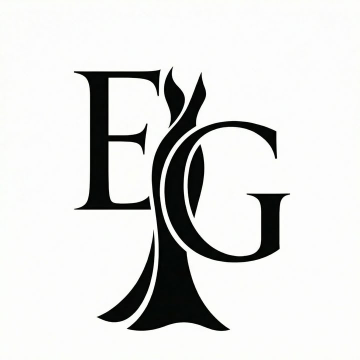

عن الدار
إيليجانزا ليست متجر فساتين
إيليجانزا ليست متجر فساتين
تقليدياً
هي دار اختيار للمرأة التي ترى أن الإطلالة جزء من مكانتها. لذلك تبيع العلامة الحضور والتميّز بقدر ما تعرض القماش والقصّة والتفصيل.
تموضع العلامة
أناقة كامتياز
العميلة هنا لا تبحث فقط عن فستان جميل، بل عن قطعة ترفع حضورها الاجتماعي والبصري في لحظة مهمة. لهذا تبدو التجربة أقرب إلى خدمة خاصة منها إلى تجارة سريعة.
واتساب في إيليجانزا ليس مجرد أداة تواصل، بل امتداد طبيعي لخدمة راقية تبدأ من العرض وتنتهي بالاعتماد النهائي.
الهوية الرسمية

مونوغرام حاد ومساحات أهدأ
الشعار الرسمي بلونه الأحادي الواضح يضع العلامة في منطقة كوتور هادئة أكثر من المتاجر الزخرفية التقليدية، وهذا ما انعكس على واجهة الموقع الجديدة.
أنوثة واثقة
النبرة فاخرة، هادئة، ومقصودة بعيداً عن البهرجة التجارية أو الألوان الصاخبة.
ندرة حقيقية
القطعة الحصرية لا تُمنح انتشاراً واسعاً، بل تحفظ قيمتها بعدد محدود لكل منطقة.
خدمة خاصة
كل CTA وكل microcopy في التجربة يقود إلى حوار شخصي أكثر من كونه checkout آلياً.
لغة أبطأ
الانتقالات هادئة، الخيارات أقل، والتركيز على القصة قبل اتخاذ القرار.